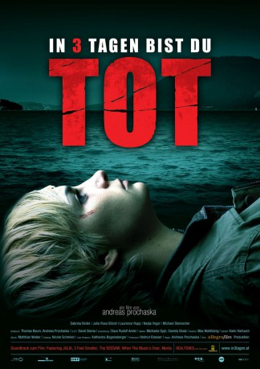

#10629 In 3 Tagen bist du tot
 
 IMDB-Wertung: 5.5 / 10
IMDB-Wertung: 5.5 / 10  Metascore: 0
Metascore: 0 
"In 3 Tagen bist du tot" verkündet die SMS eines Anonymen der 18jährigen Nina, welche gerade ihre Matura bestanden hat. Und nicht nur ihr, ebenso allen Freunden ihrer Clique. Doch ist dies wahrscheinlich nur ein übermütiger Gag eines Mitschülers. Doch während einer feuchtfröhlichen Party verschwindet Ninas Freund Martin spurlos. Am nächsten Tag wird er tot gefunden - gefesselt und grausam ertränkt. Wenig später geschieht der nächste Mord. Es gibt kein Motiv und keine Spuren. Gründlich und unerbittlich arbeitet der Mörder seine Todesliste ab. Die Polizei steht vor einem Rätsel, und in der idyllischen Kleinstadt verbreitet sich Entsetzen...
Jahr: 2006
Dauer: 93 Minuten
FSK: 16
Land: Österreich Studio: Delphi Filmverleih ProduktionTonspuren:
Untertitel:
Auflösung: 1080p (1920x1040) Größe: 6563 MB
Genre: Thriller, Horror
Regisseur: Andreas Prochaska
Drehbuch: Thomas Baum, Andreas Prochaska
Soundtrack: Matthias Weber
Darsteller:
- Sabrina Reiter als Nina
- Laurence Rupp als Martin
- Susi Stach als Erika Haas
- Karl Fischer als Berger
- Daniel Prochaska als Bursche
- Julia Rosa Peer als Mona
- Michael Steinocher als Clemens
- Nadja Vogel als Alex
- Julian Sharp als Patrick
- Andreas Kiendl als Kogler
- Michou Friesz als Elisabeth
- Amelie Jarolim als Kerstin
- Michael Rastl als Manfred Haas
- Konstantin Reichmuth als Fabian Haas
- Claudia-Sofie Jelinek als Matura Vorsitzende
- Walter Sachers als Monas Vater
- Ferry Oellinger als Lugmayr
- Raimund Wallisch als Fahrlehrer
- Silvio Szücs als Koch
- Darina Dujmic als Ernstbrunner
- Andreas Puehringer als Bernd Wagner
- Armin Watznauer als Jugendlicher
- Coco Huemer als Nina klein
- Ada Kolland als Mona klein
- Tizian Eigner als Martin klein
- Saskia Scheitz als Alex klein
- Thaddäus Reich als Clemens klein
- Ines Honsel als Krankenschwester
- Petra Schendl als Fr. Lugmayr
- Elfie Vogel als Fr. Gruber
- Kurt Vogel als Hr. Gruber
Datei: X:\2-Dilogie(G-M)\In 3 tagen bist du tot\In 3 Tagen bist du tot (2006, FSK16, 1920x1040).mkv seit 04.02.2019
Festplatte: HD Collection-2(A-Z)-3(A-M)
 Alle Filme aus Gruppe '2-Dilogie(G-M)\In 3 tagen bist du tot'
Alle Filme aus Gruppe '2-Dilogie(G-M)\In 3 tagen bist du tot'